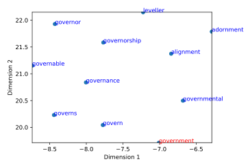
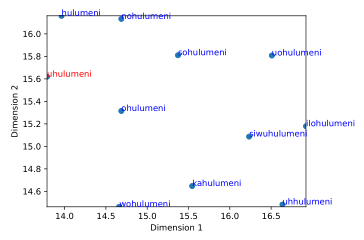
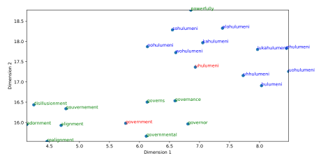
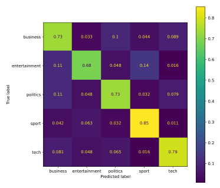

RAIL 2023Tafsiri ya mashine
Uwakilishi wa Upachikaji wa Neno Kati ya Lugha Bila Usimamiaji kwa Kiingereza-isiZulu
Tafsiri ya mashine, haijakaguliwa na binadamu. Makala asili ndiyo toleo la rejeo; sentensi zilizopigiwa mstari ni zile ambazo ukaguzi wa kiotomatiki haukuwa na uhakika nazo.
Proceedings of the Fourth workshop on Resources for African Indigenous Languages (RAIL 2023).
Tafsiri ya Ernst van Gassen (Arktos AI Lab), yenye leseni CC BY 4.0 kama makala asili. Matumizi tena yanaruhusiwa, ikiwemo ya kibiashara, kwa kutaja mwandishi. Waandishi asili hawajakagua wala kuidhinisha tafsiri hii.
Maandishi matupu ya kutumia tena, pamoja na leseni yake: Kiswahili · LESENI
Taasisi
Derwin Ngomane1, Vukosi Marivate1,2,3, Jade Abbott2,3, Rooweither Mabuya3,4
1Department of Computer Science, University of Pretoria
2Lelapa AI; 3Masakhane NLP
4South African Centre for Digital Language Resources, North-West University
Anwani za barua pepe zimeondolewa kwa sababu za faragha. Zinapatikana katika PDF asilia.
Muhtasari
Katika utafiti huu, tunachunguza ufanisi wa kutumia upachikaji wa neno kati ya lugha kwa ajili ya Ujifunzaji hamishi wa zero-shot kati ya lugha yenye rasilimali nyingi, Kiingereza, na lugha yenye rasilimali chache, isiZulu. IsiZulu ni sehemu ya familia ya lugha ya Nguni ya Afrika Kusini, ambayo ina sifa ya mofolojia changamano ya kuambatanisha. Tunatumia VecMap, zana ya Programu huria, kupata upachikaji wa neno kati ya lugha. Ili kufanya tathmini ya nje ya ufanisi wa upachikaji, tunafunza kiainishi cha habari kwenye data ya Kiingereza iliyo na lebo ili kuainisha data ya isiZulu isiyo na lebo kwa kutumia Ujifunzaji hamishi wa zero-shot. Katika utafiti wetu, tuligundua kuwa modeli yetu ina wastani wa uzani wa alama ya F1 ya 0.34. Matokeo yetu yanaonyesha kuwa VecMap inazalisha upachikaji wa neno wa moduli katika nafasi ya kati ya lugha ambayo ina athari kwenye kiainishi cha mkondo wa chini kinachotumika kwa Ujifunzaji hamishi wa zero-shot.
1 Utangulizi
Katika uundaji wa mifumo ya uchakataji wa lugha asilia (NLP) yenye usawa, upachikaji wa neno kati ya lugha unazidi kupata umaarufu. Kulingana na nadharia ya usambazaji, maneno yanayotokea katika miktadha inayolingana yana mambo ya pamoja ya semantiki (Villegas et al., 2016). Kwa sababu hiyo, upachikaji wa maneno umewezesha maendeleo ya teknolojia ya NLP.
Matumizi ya uwakilishi wa upachikaji wa maneno yametoa utendaji wa kuridhisha kwa matumizi mengi ya NLP na matumizi yanayohusiana (Gutiérrez na Keith, 2018). Upachikaji wa maneno umetumika kwa uhandisi wa sifa (Tang et al., 2014) na madhumuni ya Ujifunzaji hamishi (Bataa na Wu, 2019). Mifano ya tafsiri, kazi za uchambuzi wa hisia na kazi za uainishaji zote zimefaidika. Maboresho haya yamekuwa hasa katika lugha zenye rasilimali nyingi, kama vile Kiingereza, kutokana na wingi wa korasi zilizo na lebo katika lugha hizi. Ukosefu wa korasi zilizo na lebo katika lugha zenye rasilimali chache umekuwa hasara katika kuendeleza teknolojia za NLP ndani ya nafasi hii.
Machapisho mengi ya habari nchini Afrika Kusini yako kwa Kiingereza ingawa Afrika Kusini ina lugha rasmi kumi na moja (Marivate et al., 2020). Kulingana na matokeo ya Sensa ya 2011 ya Statistics South Africa (Stats SA), isiZulu kilikuwa lugha ya nyumbani iliyozungumzwa zaidi ikiwa na 22.7% ya idadi ya watu wakiitaja kama lugha ya nyumbani (Statistics South Africa (Stats SA), 2012). IsiZulu ni sehemu ya lugha nyingi za kiasili nchini Afrika Kusini, na ni ya familia ya lugha za Nguni (Dube na Suleman, 2019). Familia ya lugha ya Nguni ina sifa ya mofolojia yao ya kiambishi-aglutinati (Keet na Khumalo, 2016).
Afrika Kusini ni taifa la lugha nyingi ambapo idadi kubwa ya watu wana lugha ya pili wanayoitumia juu ya lugha zao za msingi. Katika miaka ya baada ya ubaguzi wa rangi, nchi imeona ongezeko la idadi ya watu wa raia wanaozungumza Kiingereza kama lugha ya pili. Tabia hii pia imeenea kwa isiZulu, ambapo raia wameongeza isiZulu kama lugha ya pili (Posel na Zeller, 2020). Hii inasisitiza umuhimu wa kuendeleza kazi ya NLP kwa lugha zenye rasilimali chache nchini Afrika Kusini.
Katika kazi hii tunajaribu kutumia fursa ya korasi yenye rasilimali nyingi na korasi yenye rasilimali chache ili kujifunza upachikaji wa maneno kati ya lugha kwa Kiingereza na isiZulu. Matumizi ya upachikaji wa maneno kati ya lugha yangeturuhusu kufanya ujifunzaji hamishi wa modeli kutoka lugha yenye rasilimali nyingi hadi lugha yenye rasilimali chache. Jitihada kwa isiZulu ni ngumu hasa kutokana na uchangamano wa kimofolojia wa lugha hiyo. Kwa hiyo, tunapaswa kushughulikia maneno kwa namna inayoweza kuongeza uwakilishi wa kisintaksia na wa semantiki wa Kiingereza na isiZulu katika nafasi kati ya lugha.
Katika kazi hii, tunalenga kujibu maswali yafuatayo ya utafiti:
- Je, tunaweza kutumia upachikaji wa maneno wa lugha moja kwa Kiingereza na isiZulu kuunda vekta za upachikaji wa kisemantiki kati ya lugha kwa lugha zote mbili?
- Je, tunaweza kutumia ujifunzaji hamishi wa zero-shot katika nafasi kati ya lugha kutumia kiainishaji cha makala ya habari za Kiingereza kuainisha makala za isiZulu?
Zaidi ya hayo, tunatanguliza seti mbili mpya za data:
- seti ya data ya Umsuka ya Kiingereza-isiZulu (Mabuya et al., 2021) ambayo inatumika katika uundaji wa vekta kati ya lugha.
- Seti ya data ya uainishaji wa habari za Afrika Kusini ya isiZulu iliyopatikana kutoka kwa data ya Shirika la Utangazaji la Afrika Kusini (SABC)
Sehemu iliyobaki ya kazi imepangwa kama ifuatavyo: Sehemu ya 2 itajadili usuli na kazi za awali. Sehemu ya 3 inaeleza mbinu iliyotumika kwa maktaba ya VecMap na kiainishaji cha kujifunza bila mifano (zero-shot learning). Sehemu ya 4 inajadili majaribio na matokeo. Hatimaye, maelezo ya kuhitimisha na hatua zinazowezekana za baadaye kwa utafiti wa siku zijazo zinajadiliwa katika Sehemu ya 5.
2 Usuli na Kazi Husika
Mbinu maarufu ambazo zimetumika kuwakilisha tokeni kama vekta zimekuwa Mfuko wa Maneno (BoW), TF-IDF na Taarifa za Pamoja za Pointi (PMI). Hata hivyo, mbinu hizi huunda matriki yenye vijenzi vingi vya sifuri na makubwa na pia huunda vekta ambazo hazinasi semantiki (Villegas et al., 2016).
Maendeleo ya kibunifu yamesababisha kuibuka kwa mbinu mpya zinazotumia mitandao ya neva. Mbinu hizi zinajumuisha miundo maarufu ya Word2Vec (Mikolov et al., 2013) na miundo inayotegemea uangalifu (Vaswani et al., 2017). Miundo hii imepata utendaji wa hali ya juu kwenye kazi za urekebishaji na Ujifunzaji hamishi katika NLP (Devlin et al., 2018).
Hasara ya upachikaji wa maneno wa lugha moja ni kwamba wanatatizika kuhamisha kati ya lugha ambazo hazifanani (Ruder et al., 2019b). Upachikaji wa maneno wa lugha nyingi uliofunzwa kwa lugha nyingi pia umeonyesha kufanya vibaya kwa lugha zenye rasilimali chache (Wu and Dredze, 2020).
Mbinu za ujifunzaji wa uwakilishi kati ya lugha zimependekezwa kushughulikia suala hili (Ruder et al., 2019a). Kuna aina mbili za mbinu za upachikaji wa maneno kati ya lugha: mbinu za ramani na mbinu za baada ya ukweli (Ruder et al., 2019a). Mbinu za awali za ramani zilihitaji matumizi ya kamusi ya ramani ya lugha mbili kati ya lugha zinazochunguzwa, lakini maboresho ya hivi karibuni yameanzisha mbinu za kishindani. Mbinu za kishindani hudhania kwamba nafasi za lugha moja za pembejeo zina umbo sawa na hivyo kupunguza hitaji la kamusi ya uchoraji wa lugha mbili (Ruder et al., 2019a). Hata hivyo, imeonyeshwa kwamba mbinu za kishindani hufanya vibaya wakati upachikaji wa lugha moja hauna umbo sawa (Søgaard et al., 2018).
Kazi za NLP za mkondo wa chini zimethibitishwa kunufaika kutokana na upachikaji wa maneno kati ya lugha. Kwa mfano, upachikaji wa maneno kati ya lugha umeongeza utendaji wa tafsiri ya mashine (Conneau and Lample, 2019) na kazi za kuweka lebo za aina za maneno (POS) (Kim et al., 2017) kama mkakati wa Ujifunzaji hamishi.
VecMap imetumika kuunda ramani kati ya Kiingereza na Kiwelshi na upachikaji uliotokana ulitumika kufunza kiainishaji cha hisia cha Kiwelshi cha kujifunza bila mifano na kwa mifano michache (Espinosa-Anke et al., 2021). Katika muktadha wa Afrika Kusini, VecMap ilitumika kutengeneza upachikaji wa maneno kati ya lugha wa Sepedi-Setswana na kupitisha mbinu ya tathmini ya semantiki kuchanganua ufanano kati ya jozi za istilahi za Setswana na Sepedi (Makgatho et al., 2021) na kutumika katika changamoto ya kujibu maswali yenye kelele na ya lugha nyingi kufunza modeli ya uainishaji ya LSTM (Daniel et al., 2019).
Ujifunzaji hamishi bila mifano haujatumika sana kwa uainishaji wa habari za Afrika Kusini. Marivate et al. (2020) walitumia korasi yenye maelezo ya vipengee vya habari za ndani kuunda kiainishaji cha habari kwa Setswana na Sepedi. Badala ya kutumia upachikaji wa maneno tuli kama ule unaotumiwa na VecMap, kutumia upachikaji wa maneno wa kimuktadha kutoka kwa modeli ya BERT iliyorekebishwa vizuri kumepata matokeo ya kuvutia kwa kazi ya kujifunza bila mifano ya Utambuzi wa Majina ya Watu, Mahali na Mashirika (NER) kwa isiZulu (Wang et al., 2020). Hata hivyo, kazi hii ingehitaji kompyuta kubwa na haijatumika kwa uainishaji wa habari. Kwa ufahamu wetu, hii ni kazi ya kwanza inayotumia upachikaji wa maneno kati ya lugha unaozalishwa kutoka VecMap kuunda kiainishaji cha makala ya habari kutoka Kiingereza hadi isiZulu.
3 Mbinu
Tunajadili mbinu ya ukuzaji wa upachikaji wa maneno kati ya lugha na kiainishaji cha mkondo wa chini kwa uainishaji wa habari.
3.1 Ukusanyaji wa data & Uchakataji wa Awali
Data iliyotumiwa katika utafiti huu inatoka kwenye hazina ya Kituo cha Afrika Kusini cha Rasilimali za Lugha za Kidijitali. Tunatumia data hii kwa madhumuni ya kufunza modeli yetu ya upachikaji kati ya lugha. Data inajumuisha data ya maandishi pekee kwa Kiingereza na isiZulu. Kwa mujibu wa nyaraka za kiufundi, korasi ya Kiingereza ya lugha moja ina tokeni 35 686 791 huku korasi ya Kizulu ikiwa na tokeni 451 154. Tutazingatia tu kategoria za chanzo ambazo ni sawa kati ya lugha hizo.
Pia tunatumia korasi sambamba ya Kiingereza-Kizulu ya Umsuka (Mabuya et al., 2021) ambayo ni korasi sambamba ya Kizulu ya Programu huria, yenye ubora wa juu kutoka mchanganyiko wa vikoa, ikizingatia muktadha wa Kusini mwa Afrika na kimataifa. Nusu ya seti ya data ilikuwa sampuli nasibu ya seti ya data ya News Crawl ambayo kisha ilitafsiriwa katika Kizulu. Nusu nyingine ya seti ya data ilichukuliwa sampuli kutoka magazeti ya Kizulu (machapisho ya Isolezwe, Ilanga na Ezasegagasini Metro), kuanzia 2012 hadi 2016, pamoja na riwaya na hadithi fupi, ambazo kisha zilitafsiriwa katika Kiingereza. Watafsiri wa kitaalamu walitumiwa kuunda seti ya data. Utafiti wa awali wa majaribio wa sentensi 500 ulifanywa na uhakikisho wa ubora ukifanywa na mwanaisimu wa Kizulu ili kuhakikisha kwamba mahitaji ya ubora yanaeleweka.
Jedwali la 1 linawasilisha vyanzo vilivyotumika na idadi ya tokeni. Kwa jumla, tuna tokeni 1 320 393 na 2 121 127 kwa isiZulu na Kiingereza mtawalia.

Jedwali la 1: Tokeni kwa Chanzo na Lugha
Tunaondoa maneno ya kawaida na kuondoa alama ya uakifishaji katika korasi asili. Zaidi ya hayo, tunafanya ulemishaji kwenye korasi ya Kiingereza kwa kutumia kilemishaji cha WordNet (Miller, 1995). Tulifunza kiainishaji cha habari kwa data ya habari ya British Broadcasting Corporation (BBC) iliyopatikana kutoka Kaggle. Kuna makala 1 490 za Kiingereza kwa ajili ya mafunzo na makala 736 za Kiingereza kwa madhumuni ya tathmini. Tunatumia makala ya habari ya SABC kwa tathmini ya isiZulu. Wasemaji wawili wa isiZulu walichora alama kwenye makala 219 za habari za SABC, ambazo ziliangaliwa na mtaalamu wa lugha ya isiZulu. Jedwali la 2 linawasilisha usambazaji wa seti za data.

Jedwali la 2: Marudio ya kategoria
3.2 Upachikaji wa Maneno wa Lugha Moja
Korasi zilizochakatwa ambazo tumezieleza katika Sehemu ya 3.1, zinatumika kutengeneza upachikaji wa lugha moja kwa kutumia moduli ya Python ya Gensim. Tunatumia usanifu wa FastText kushughulikia mofolojia ya kiambishi cha isiZulu (Bojanowski et al., 2017).
Tunazalisha vekta za vipimo 64 kwa kila tokeni katika korasi kwa ukubwa wa dirisha la muktadha wa 3. Vigezo hivi vya juu vilichaguliwa kwa sababu ya ukubwa mdogo wa msamiati wa korasi zetu, na imeonyeshwa kuwa dirisha fupi la muktadha hunasa uwakilishi wa kisintaksia wa neno na dirisha kubwa la muktadha hunasa uwakilishi zaidi wa mada (Levy and Goldberg, 2014). Ili kuonyesha uwakilishi uliojifunza wa korasi tunatumia Uniform Manifold Approximation and Projection (UMAP) (McInnes et al., 2018) kuibua maneno 10 ya karibu zaidi kutoka korasi zote mbili za lugha moja. Tokeni zilizochaguliwa ni "government" kwa Kiingereza na tafsiri ya isiZulu "uhulumeni". Katika Kielelezo 1, tunaona kwamba tokeni zilizo karibu zaidi na "uhulumeni" ni visawe vya "uhulumeni". Vilevile, pia tunaona hali hiyo hiyo kwa "government".

(a) Uwakilishi wa "government"

(b) Uwakilishi wa "uhulumeni"
Kielelezo 1: Uwakilishi wa UMAP wa upachikaji wa lugha moja
3.3 Kiainishaji cha Makala ya Habari
Upachikaji wa maneno kati ya lugha uliozalishwa unatumika kufunza kiainishaji kwenye korasi ya Kiingereza. Tunalinganisha algoriti nne na kutathmini utendakazi wake kwa kutumia uthibitishaji mtambuka. Mifano tunayoifunza ni Naive Bayes, Support Vector Machines, Logistic Regression, na Gradient Boosted Machines. Mfano bora zaidi kisha hutumika kuainisha makala za habari za isiZulu zisizoonekana katika nafasi ya upachikaji kati ya lugha.
4 Majaribio na Matokeo
Katika sehemu hii ya makala tunaeleza majaribio na matokeo yaliyofanywa katika jitihada za kujibu maswali ya utafiti. Tunaeleza upachikaji wa maneno kati ya lugha ulioundwa na majaribio yaliyofanywa ili kuunda kiainishaji cha makala za habari.
4.1 Upachikaji wa Maneno Kati ya Lugha
Tunatumia maktaba ya VecMap iliyoundwa na Artetxe et al. (2018) kuzalisha upachikaji wa maneno kati ya lugha. Katika VecMap, tunatumia mbinu ya kujifunza kati ya lugha isiyo na usimamiaji. Uwakilishi wa UMAP uliotengenezwa na algoriti wa maneno 10 yaliyo karibu zaidi na "government" na "uhulumeni" umeonyeshwa katika Kielelezo 2. Baadhi ya maneno kutoka kwa uwakilishi wa lugha moja uliotolewa katika Kielelezo 1 yalihifadhiwa na VecMap. Hata hivyo, algoriti ilitengeneza mkusanyiko unaotegemea lugha isipokuwa kwa kutambua "powerfully" kuwa karibu zaidi na maneno ya Kizulu.
Umoduli ni jambo ambalo mkusanyiko wa lugha hutokea katika nafasi ya kati ya lugha (Fujinuma et al., 2019), kama inavyoonyeshwa katika Kielelezo 2. Fujinuma et al. (2019) wanadai kwamba upachikaji kati ya lugha unaoakisi umoduli una athari hasi kwenye kazi za mkondo wa chini.

Kielelezo 2: Uwakilishi wa UMAP wa upachikaji kati ya lugha wa VecMap
4.2 Ujifunzaji hamishi wa zero-shot
Sehemu hii inawasilisha kazi ya ujifunzaji hamishi wa zero-shot ya kutambua vichwa vya habari vya Kizulu kutoka kwa kiainishaji cha habari cha Kiingereza. Awali tunafunza modeli yetu kwenye makala ya habari ya Kiingereza yaliyo na lebo kwa kutumia upachikaji wa maneno wa kati ya lugha uliozalishwa awali kutoka sehemu iliyotangulia.
4.2.1 Mpangilio wa Jaribio
Data ya pembejeo inahitaji kubadilishwa kuwa uwakilishi wake wa vekta kulingana na upachikaji wa maneno kutoka VecMap. Kwa kuwa kila tokeni ina vipimo 64, tunawakilisha sentensi kama wastani wa uwakilishi wote wa vekta za tokeni. Tunatumia vekta ya sifuri yenye vipimo 64 kuwakilisha tokeni ambazo hazipo katika msamiati.
Tunatumia 75% ya data kwa mafunzo na 25% kwa madhumuni ya tathmini katika data ya Kiingereza ya BBC. Ili kuchagua modeli bora, tunaendesha tathmini mtambuka iliyorudiwa ya mara 5 yenye matabaka kwenye data ya mafunzo. Kulingana na utaratibu wa uthibitishaji mtambuka, modeli ya LightGBM inazishinda modeli nyingine zote.
4.2.2 Matokeo
Mfano wa LightGBM unapata Usahihi wa 76.4% kwenye seti ya tathmini. Kiainishaji kilipata Usahihi wa zaidi ya 70% kwa madarasa mengi, isipokuwa burudani ambayo ilipata Usahihi wa 68%.

Kielelezo 3: Matrix ya mkanganyiko ya seti ya tathmini
Tunatumia mfano wa LightGBM kuainisha makala ya habari ya isiZulu. Utendaji uliotokana wa mfano unawasilishwa katika Jedwali 3.

Jedwali 3: Utendaji wa mfano kwenye habari za SABC isiZulu
Mfano ulifanya kazi kwa njia isiyoridhisha katika vichwa vyote. Hata hivyo, kama inavyoonyeshwa katika Jedwali 3 mfano unaonekana kufanya vizuri zaidi kwa vichwa vinavyohusiana na siasa na kupata alama ya F1 ya 0.51. Siasa ina ukubwa wa sampuli kubwa zaidi katika data yetu ya isiZulu. Vichwa vingine vilikuwa na utendaji wa chini, jambo ambalo linaweza kuelezewa na umoduli, ambapo upachikaji kati ya lugha unaojikusanya kwa lugha huwa na utendaji duni kwa kazi za chini ya mkondo (Fujinuma et al., 2019).
5 Hitimisho
Katika kazi hii tunatumia VecMap kuunda upachikaji wa maneno kati ya lugha kati ya Kiingereza na isiZulu. Tumeonyesha kuwa VecMap inazalisha upachikaji wa maneno wa moduli katika nafasi ya kati ya lugha kutokana na upachikaji wa maneno wa lugha moja unaozalishwa na FastText. Kwa hivyo, tunazalisha upachikaji kati ya lugha unaotumika kufunza kiainishaji kinachofanya vizuri kwenye habari za Kiingereza. Hata hivyo, hatukuweza kuhamisha ujifunzaji kwenye makala ya habari ya isiZulu ambayo hayajaonekana.
Katika kazi ya baadaye, tungependa kuchunguza utendaji wa VecMap kwa kutumia korasi kubwa zaidi ya isiZulu. Zaidi ya hayo, ingekuwa na faida pia kutumia kipimo cha umoduli ili kuboresha vigezo vya juu vya FastText ili kuzalisha upachikaji wa lugha moja unaofaa kwa kazi hiyo.
Mapungufu
Katika sehemu hii ya makala tunaelezea vikwazo vya makala hii. Tulifanya maamuzi ya kubuni kulingana na korasi na rasilimali zilizopo ili kufanya utafiti huu uwezekane.
Kazi hii inawasilisha korasi yenye ukubwa mdogo kwa isiZulu. Hii inatokana na ukosefu wa rasilimali kwa lugha hii. Kazi nyingine iliyojaribu kujenga upachikaji wa maneno wa lugha moja kwa isiZulu ni ile ya Dlamini et al. (2021). Hata hivyo, matokeo hayakuchapishwa katika rasilimali inayopatikana kwa umma ambayo ingetuwezesha kulinganisha upachikaji uliozalishwa na kazi yetu.
VecMap haikabiliani vizuri na mzigo mkubwa bila matumizi ya GPU, na hivyo utafutaji wa vigezo vya juu haukufanywa kwa kazi hii. Hata hivyo, kutumia vekta zenye vipimo 128 na ukubwa mkubwa wa dirisha wa 10 kama ilivyopendekezwa na Ri na Tsuruoka (2020) kulisababisha kupungua kwa utendaji, hata kwa makala ya habari ya Kiingereza.
Pia tunabainisha kuwa modeli ya chini ya mkondo ilifunzwa kwa kutumia vichwa vya habari vya makala ya habari za Ulaya na hilo linaweza kuwa na athari kwenye utendaji wa kutambua matukio ambayo ni ya kipekee kwa habari za Afrika Kusini.
Mchango wa Mwandishi
Derwin Ngomane: Ukusanyaji wa data; uchambuzi rasmi; uchunguzi; mbinu; uandishi - rasimu ya awali; uandishi - mapitio na uhariri. Vukosi Marivate: Uwekaji dhana; ukusanyaji wa data; rasilimali; usimamizi; uthibitishaji; uandishi - mapitio na uhariri. Jade Abbott: Usimamizi; ukusanyaji wa data; uthibitishaji; uandishi - mapitio na uhariri. Rooweither Mabuya: Usimamizi; ukusanyaji wa data; uandishi - mapitio na uhariri.
Shukrani
Tungependa kutambua ufadhili kutoka Facebook (Zawadi ya Tafsiri ya Mashine), Uenyekiti wa ABSA wa Sayansi ya Data na mpango wa wasomi wa utafiti wa Google.
Maelezo
1 https://repo.sadilar.org/handle/20.500.12185/466
2 https://repo.sadilar.org/handle/20.500.12185/338
3 https://www.isolezwe.co.za
4 https://ilanganews.co.za/
5 https://www.durban.gov.za/pages/government/documents
6 Orodha ya maneno ya kawaida ya isiZulu yanayoondolewa: https://github.com/stopwords-iso/stopwords-zu
7 https://www.kaggle.com/c/learn-ai-bbc
8 Data zinapatikana katika https://github.com/dsfsi/izindaba-zesizulu na https://zenodo.org/record/5674236
9 https://radimrehurek.com/gensim/index.html
10 https://github.com/artetxem/vecmap
Marejeo
Mikel Artetxe, Gorka Labaka, and Eneko Agirre. 2018. A robust self-learning method for fully unsupervised cross-lingual mappings of word embeddings. In Proceedings of the 56th Annual Meeting of the Association for Computational Linguistics (Volume 1: Long Papers), pages 789-798, Melbourne, Australia. Association for Computational Linguistics.
Enkhbold Bataa and Joshua Wu. 2019. An investigation of transfer learning-based sentiment analysis in japanese. arXiv preprint arXiv:1905.09642.
Piotr Bojanowski, Edouard Grave, Armand Joulin, and Tomas Mikolov. 2017. Enriching word vectors with subword information. Transactions of the association for computational linguistics, 5:135-146.
Alexis Conneau and Guillaume Lample. 2019. Cross-lingual language model pre-training. Advances in Neural Information Processing Systems, 32:7059-7069.
Jeanne E Daniel, Willie Brink, Ryan Eloff, and Charles Copley. 2019. Towards automating healthcare question answering in a noisy multilingual low-resource setting. In Proceedings of the 57th Annual Meeting of the Association for Computational Linguistics, pages 948-953.
Jacob Devlin, Ming-Wei Chang, Kenton Lee, and Kristina Toutanova. 2018. BERT: Pre-training of Deep Bidirectional Transformers for Language Understanding. arXiv.
Sibonelo Dlamini, Edgar Jembere, Anban Pillay, and Brett van Niekerk. 2021. isizulu word embeddings. In 2021 Conference on Information Communications Technology and Society (ICTAS), pages 121-126. IEEE.
Meluleki Dube and Hussein Suleman. 2019. Language identification for south african bantu languages using rank order statistics. In International Conference on Asian Digital Libraries, pages 283-289. Springer.
Luis Espinosa-Anke, Geraint Palmer, Padraig Corcoran, Maxim Filimonov, Irena Spasić, and Dawn Knight. 2021. English-welsh cross-lingual embeddings. Applied Sciences, 11(14):6541.
Yoshinari Fujinuma, Jordan Boyd-Graber, and Michael J. Paul. 2019. A resource-free evaluation metric for cross-lingual word embeddings based on graph modularity. arXiv.
Luis Gutiérrez and Brian Keith. 2018. A systematic literature review on word embeddings. In International Conference on Software Process Improvement, pages 132-141. Springer.
C. Maria Keet and Langa Khumalo. 2016. Grammar rules for the isiZulu complex verb. arXiv.
Joo-Kyung Kim, Young-Bum Kim, Ruhi Sarikaya, and Eric Fosler-Lussier. 2017. Cross-lingual transfer learning for pos tagging without cross-lingual resources. In Proceedings of the 2017 conference on empirical methods in natural language processing, pages 2832-2838.
Omer Levy and Yoav Goldberg. 2014. Dependencybased word embeddings. In Proceedings of the 52nd Annual Meeting of the Association for Computational Linguistics (Volume 2: Short Papers), pages 302-308, Baltimore, Maryland. Association for Computational Linguistics.
Rooweither Mabuya, Jade Abbott, and Vukosi Marivate. 2021. Umsuka english - isizulu parallel corpus. Https://doi.org/10.5281/zenodo.5035171.
Mack Makgatho, Vukosi Marivate, Tshephisho Sefara, and Valencia Wagner. 2021. Training cross-lingual embeddings for setswana and sepedi. arXiv preprint arXiv:2111.06230.
Vukosi Marivate, Tshephisho Sefara, Vongani Chabalala, Keamogetswe Makhaya, Tumisho B. Mokgonyane, Rethabile Mokoena, and Abiodun Modupe. 2020. Investigating an approach for low resource language dataset creation, curation and classification: Setswana and sepedi. arXiv.
Leland McInnes, John Healy, Nathaniel Saul, and Lukas Grossberger. 2018. Umap: Uniform manifold approximation and projection. The Journal of Open Source Software, 3(29):861.
Tomas Mikolov, Ilya Sutskever, Kai Chen, Greg S Corrado, and Jeff Dean. 2013. Distributed representations of words and phrases and their compositionality. In Advances in Neural Information Processing Systems, volume 26. Curran Associates, Inc.
George A Miller. 1995. Wordnet: a lexical database for english. Communications of the ACM, 38(11):39-41.
Dorrit Posel and Jochen Zeller. 2020. Language use and language shift in post-apartheid South Africa, pages 288-309. Cambridge University Press Cambridge.
Ryokan Ri and Yoshimasa Tsuruoka. 2020. Revisiting the context window for cross-lingual word embeddings. In Proceedings of the 58th Annual Meeting of the Association for Computational Linguistics, pages 995-1005, Online. Association for Computational Linguistics.
Sebastian Ruder, Anders Søgaard, and Ivan Vulić. 2019a. Unsupervised cross-lingual representation learning. In Proceedings of the 57th Annual Meeting of the Association for Computational Linguistics: Tutorial Abstracts, pages 31-38, Florence, Italy. Association for Computational Linguistics.
Sebastian Ruder, Ivan Vulić, and Anders Søgaard. 2019b. A survey of cross-lingual word embedding models. Journal of Artificial Intelligence Research, 65:569-631.
Anders Søgaard, Sebastian Ruder, and Ivan Vulić. 2018. On the limitations of unsupervised bilingual dictionary induction. In Proceedings of the 56th Annual Meeting of the Association for Computational Linguistics (Volume 1: Long Papers), pages 778-788, Melbourne, Australia. Association for Computational Linguistics.
Statistics South Africa (Stats SA). 2012. The South Africa I know, The Home I understand. https://www.statssa.gov.za/census/census_2011/census_products/NW_Municipal_Report.pdf.pdf.
Duyu Tang, Furu Wei, Nan Yang, Ming Zhou, Ting Liu, and Bing Qin. 2014. Learning sentiment-specific word embedding for Twitter sentiment classification. In Proceedings of the 52nd Annual Meeting of the Association for Computational Linguistics (Volume 1: Long Papers), pages 1555-1565, Baltimore, Maryland. Association for Computational Linguistics.
Ashish Vaswani, Noam Shazeer, Niki Parmar, Jakob Uszkoreit, Llion Jones, Aidan N Gomez, Łukasz Kaiser, and Illia Polosukhin. 2017. Attention is all you need. Advances in neural information processing systems, 30.
María Paula Villegas, María José Garciarena Ucelay, Juan Pablo Fernández, Miguel A Álvarez Carmona, Marcelo Luis Errecalde, and Leticia Cagnina. 2016. Vector-based word representations for sentiment analysis: a comparative study. In XXII Congreso Argentino de Ciencias de la Computación (CACIC 2016).
Zihan Wang, Karthikeyan K, Stephen Mayhew, and Dan Roth. 2020. Extending multilingual BERT to low-resource languages. In Findings of the Association for Computational Linguistics: EMNLP 2020, pages 2649-2656, Online. Association for Computational Linguistics.
Shijie Wu and Mark Dredze. 2020. Are all languages created equal in multilingual BERT? arXiv preprint arXiv:2005.09093.
English na Kiswahili
Unsupervised Cross-lingual Word Embedding Representation for English-isiZulu
Uwakilishi wa Upachikaji wa Neno Kati ya Lugha Bila Usimamiaji kwa Kiingereza-isiZulu
Affiliations
Derwin Ngomane1, Vukosi Marivate1,2,3, Jade Abbott2,3, Rooweither Mabuya3,4
1Department of Computer Science, University of Pretoria;
2Lelapa AI; 3Masakhane NLP;
4South African Centre for Digital Language Resources, North-West University
, ,
,
Taasisi
Derwin Ngomane1, Vukosi Marivate1,2,3, Jade Abbott2,3, Rooweither Mabuya3,4
1Department of Computer Science, University of Pretoria;
2Lelapa AI; 3Masakhane NLP;
4South African Centre for Digital Language Resources, North-West University
, ,
,
Abstract
Muhtasari
In this study, we investigate the effectiveness of using cross-lingual word embeddings for zero-shot transfer learning between a language with an abundant resource, English, and a language with limited resource, isiZulu. IsiZulu is a part of the South African Nguni language family, which is characterised by complex agglutinating morphology. We use VecMap, an open source tool, to obtain cross-lingual word embeddings. To perform an extrinsic evaluation of the effectiveness of the embeddings, we train a news classifier on labelled English data in order to categorise unlabelled isiZulu data using zero-shot transfer learning. In our study, we found our model to have a weighted average F1-score of 0.34. Our findings demonstrate that VecMap generates modular word embeddings in the cross-lingual space that have an impact on the downstream classifier used for zero-shot transfer learning.
Katika utafiti huu, tunachunguza ufanisi wa kutumia upachikaji wa neno kati ya lugha kwa ajili ya Ujifunzaji hamishi wa zero-shot kati ya lugha yenye rasilimali nyingi, Kiingereza, na lugha yenye rasilimali chache, isiZulu. IsiZulu ni sehemu ya familia ya lugha ya Nguni ya Afrika Kusini, ambayo ina sifa ya mofolojia changamano ya kuambatanisha. Tunatumia VecMap, zana ya Programu huria, kupata upachikaji wa neno kati ya lugha. Ili kufanya tathmini ya nje ya ufanisi wa upachikaji, tunafunza kiainishi cha habari kwenye data ya Kiingereza iliyo na lebo ili kuainisha data ya isiZulu isiyo na lebo kwa kutumia Ujifunzaji hamishi wa zero-shot. Katika utafiti wetu, tuligundua kuwa modeli yetu ina wastani wa uzani wa alama ya F1 ya 0.34. Matokeo yetu yanaonyesha kuwa VecMap inazalisha upachikaji wa neno wa moduli katika nafasi ya kati ya lugha ambayo ina athari kwenye kiainishi cha mkondo wa chini kinachotumika kwa Ujifunzaji hamishi wa zero-shot.
1 Introduction
1 Utangulizi
In the development of egalitarian Natural Language Processing (NLP) systems, cross-lingual word embeddings are gaining prominence. According to distributional theory, words that appear in comparable contexts have semantic commonalities (Villegas et al., 2016). As a result, word embeddings have paved the way for NLP technology advancement.
Katika uundaji wa mifumo ya uchakataji wa lugha asilia (NLP) yenye usawa, upachikaji wa neno kati ya lugha unazidi kupata umaarufu. Kulingana na nadharia ya usambazaji, maneno yanayotokea katika miktadha inayolingana yana mambo ya pamoja ya semantiki (Villegas et al., 2016). Kwa sababu hiyo, upachikaji wa maneno umewezesha maendeleo ya teknolojia ya NLP.
The use of word embedding representation has provided satisfactory performance for many NLP applications and associated applications (Gutiérrez and Keith, 2018). Word embeddings have been used for feature engineering (Tang et al., 2014) and transfer learning purposes (Bataa and Wu, 2019). Translation models, sentiment analysis tasks and classification tasks have all benefited. These improvements have been primarily in high-resource languages, such as English, due to the abundance of labelled corpora in these languages. The lack of labelled corpora in low-resourced languages has come at a disadvantage in advancing NLP technologies within this space.
Matumizi ya uwakilishi wa upachikaji wa maneno yametoa utendaji wa kuridhisha kwa matumizi mengi ya NLP na matumizi yanayohusiana (Gutiérrez na Keith, 2018). Upachikaji wa maneno umetumika kwa uhandisi wa sifa (Tang et al., 2014) na madhumuni ya Ujifunzaji hamishi (Bataa na Wu, 2019). Mifano ya tafsiri, kazi za uchambuzi wa hisia na kazi za uainishaji zote zimefaidika. Maboresho haya yamekuwa hasa katika lugha zenye rasilimali nyingi, kama vile Kiingereza, kutokana na wingi wa korasi zilizo na lebo katika lugha hizi. Ukosefu wa korasi zilizo na lebo katika lugha zenye rasilimali chache umekuwa hasara katika kuendeleza teknolojia za NLP ndani ya nafasi hii.
Many news publications in South Africa are in English even though South Africa has eleven official languages (Marivate et al., 2020). According to the Statistics South Africa (Stats SA) Census 2011 results, isiZulu was the most spoken home language with 22.7% of the population indicating it as a home language (Statistics South Africa (Stats SA), 2012). IsiZulu forms part of the many indigenous languages in South Africa, and belongs to the Nguni family of languages (Dube and Suleman, 2019). The Nguni language family is characterised by their agglutinative morphology (Keet and Khumalo, 2016).
Machapisho mengi ya habari nchini Afrika Kusini yako kwa Kiingereza ingawa Afrika Kusini ina lugha rasmi kumi na moja (Marivate et al., 2020). Kulingana na matokeo ya Sensa ya 2011 ya Statistics South Africa (Stats SA), isiZulu kilikuwa lugha ya nyumbani iliyozungumzwa zaidi ikiwa na 22.7% ya idadi ya watu wakiitaja kama lugha ya nyumbani (Statistics South Africa (Stats SA), 2012). IsiZulu ni sehemu ya lugha nyingi za kiasili nchini Afrika Kusini, na ni ya familia ya lugha za Nguni (Dube na Suleman, 2019). Familia ya lugha ya Nguni ina sifa ya mofolojia yao ya kiambishi-aglutinati (Keet na Khumalo, 2016).
South Africa is a multilingual nation where the large majority of the population have a secondary language that they use on top of their primary languages. Over the post-apartheid years, the country has seen a population growth of citizens that speak English as a second language. This behaviour has also become prevalent for isiZulu, where citizens have added isiZulu as a second language (Posel and Zeller, 2020). This emphasizes the importance of advancing NLP work for low-resourced languages in South Africa.
Afrika Kusini ni taifa la lugha nyingi ambapo idadi kubwa ya watu wana lugha ya pili wanayoitumia juu ya lugha zao za msingi. Katika miaka ya baada ya ubaguzi wa rangi, nchi imeona ongezeko la idadi ya watu wa raia wanaozungumza Kiingereza kama lugha ya pili. Tabia hii pia imeenea kwa isiZulu, ambapo raia wameongeza isiZulu kama lugha ya pili (Posel na Zeller, 2020). Hii inasisitiza umuhimu wa kuendeleza kazi ya NLP kwa lugha zenye rasilimali chache nchini Afrika Kusini.
In this work we attempt to take advantage of a high-resource corpus and a low-resource corpus in order to learn cross-lingual word embeddings for English and isiZulu. The use of cross-lingual word embeddings would allow us to perform model transfer learning from a high resource language to a low-resource language. The undertaking for isiZulu is especially challenging due to the morphological complexity of the language. Hence, we have to a handle words in a manner that can maximise syntactic and semantic representation of both English and isiZulu in the cross-lingual space.
Katika kazi hii tunajaribu kutumia fursa ya korasi yenye rasilimali nyingi na korasi yenye rasilimali chache ili kujifunza upachikaji wa maneno kati ya lugha kwa Kiingereza na isiZulu. Matumizi ya upachikaji wa maneno kati ya lugha yangeturuhusu kufanya ujifunzaji hamishi wa modeli kutoka lugha yenye rasilimali nyingi hadi lugha yenye rasilimali chache. Jitihada kwa isiZulu ni ngumu hasa kutokana na uchangamano wa kimofolojia wa lugha hiyo. Kwa hiyo, tunapaswa kushughulikia maneno kwa namna inayoweza kuongeza uwakilishi wa kisintaksia na wa semantiki wa Kiingereza na isiZulu katika nafasi kati ya lugha.
In this work, we aim to answer the following research questions:
Katika kazi hii, tunalenga kujibu maswali yafuatayo ya utafiti:
Can we use monolingual word embeddings for English and isiZulu to create cross-lingual semantic embedding vectors for both languages?
Je, tunaweza kutumia upachikaji wa maneno wa lugha moja kwa Kiingereza na isiZulu kuunda vekta za upachikaji wa kisemantiki kati ya lugha kwa lugha zote mbili?
Can we use zero-shot transfer learning in the cross-lingual space to use an English news article classifier to classify isiZulu articles?
Je, tunaweza kutumia ujifunzaji hamishi wa zero-shot katika nafasi kati ya lugha kutumia kiainishaji cha makala ya habari za Kiingereza kuainisha makala za isiZulu?
Additionally, we introduce two new datasets:
Zaidi ya hayo, tunatanguliza seti mbili mpya za data:
the Umsuka English-isiZulu dataset (Mabuya et al., 2021) which is used in the creation of the cross-lingual vectors.
seti ya data ya Umsuka ya Kiingereza-isiZulu (Mabuya et al., 2021) ambayo inatumika katika uundaji wa vekta kati ya lugha.
An isiZulu South African news classification dataset sourced from the South African Broadcasting Corporation (SABC) data
Seti ya data ya uainishaji wa habari za Afrika Kusini ya isiZulu iliyopatikana kutoka kwa data ya Shirika la Utangazaji la Afrika Kusini (SABC)
The remainder of the work is organised as follows: Section 2 will discuss the background and prior work. Section 3 describes the methodology used for the VecMap library and zero-shot learning classifier. Section 4 discusses the experiments and results. Finally, concluding remarks and potential next steps for future research are discussed in Section 5.
Sehemu iliyobaki ya kazi imepangwa kama ifuatavyo: Sehemu ya 2 itajadili usuli na kazi za awali. Sehemu ya 3 inaeleza mbinu iliyotumika kwa maktaba ya VecMap na kiainishaji cha kujifunza bila mifano (zero-shot learning). Sehemu ya 4 inajadili majaribio na matokeo. Hatimaye, maelezo ya kuhitimisha na hatua zinazowezekana za baadaye kwa utafiti wa siku zijazo zinajadiliwa katika Sehemu ya 5.
2 Background & Related Work
2 Usuli na Kazi Husika
The popular methods that have been used to represent tokens as vectors have been Bag-of-Words (BoW), Term Frequency-Inverse Document Frequency (TF-IDF) and Pointwise Mutual Information (PMI). However, these techniques create sparse and large matrices and also create vectors that do not capture semantics (Villegas et al., 2016).
Mbinu maarufu ambazo zimetumika kuwakilisha tokeni kama vekta zimekuwa Mfuko wa Maneno (BoW), TF-IDF na Taarifa za Pamoja za Pointi (PMI). Hata hivyo, mbinu hizi huunda matriki yenye vijenzi vingi vya sifuri na makubwa na pia huunda vekta ambazo hazinasi semantiki (Villegas et al., 2016).
Innovative advancements have led to the emergence of new techniques using neural networks. These methods include the popular Word2Vec models (Mikolov et al., 2013) and attention based models (Vaswani et al., 2017). These models have achieved state-of-the-art performance on adaption and transfer learning tasks in NLP (Devlin et al., 2018).
Maendeleo ya kibunifu yamesababisha kuibuka kwa mbinu mpya zinazotumia mitandao ya neva. Mbinu hizi zinajumuisha miundo maarufu ya Word2Vec (Mikolov et al., 2013) na miundo inayotegemea uangalifu (Vaswani et al., 2017). Miundo hii imepata utendaji wa hali ya juu kwenye kazi za urekebishaji na Ujifunzaji hamishi katika NLP (Devlin et al., 2018).
The disadvantage of monolingual word embeddings is that they struggle with transferring between languages that are dissimilar (Ruder et al., 2019b). Multilingual word embeddings trained on multiple languages have also shown to perform poorly for low-resource languages (Wu and Dredze, 2020).
Hasara ya upachikaji wa maneno wa lugha moja ni kwamba wanatatizika kuhamisha kati ya lugha ambazo hazifanani (Ruder et al., 2019b). Upachikaji wa maneno wa lugha nyingi uliofunzwa kwa lugha nyingi pia umeonyesha kufanya vibaya kwa lugha zenye rasilimali chache (Wu and Dredze, 2020).
Approaches for cross-lingual representation learning have been proposed to address this issue (Ruder et al., 2019a). There are two types of cross-lingual word embedding methods: mapping and post-hoc approaches (Ruder et al., 2019a). Initial mapping approaches required the use of a bilingual mapping dictionary between the languages of study, but recent improvements have introduced adversarial methods. Adversarial approaches presume that the input monolingual spaces are isomorphic and hence reducing the requirement of a bilingual mapping dictionary (Ruder et al., 2019a). However, it has been shown that adverserial methods perform poorly when the monolingual embeddings are not isomorphic (Søgaard et al., 2018).
Mbinu za ujifunzaji wa uwakilishi kati ya lugha zimependekezwa kushughulikia suala hili (Ruder et al., 2019a). Kuna aina mbili za mbinu za upachikaji wa maneno kati ya lugha: mbinu za ramani na mbinu za baada ya ukweli (Ruder et al., 2019a). Mbinu za awali za ramani zilihitaji matumizi ya kamusi ya ramani ya lugha mbili kati ya lugha zinazochunguzwa, lakini maboresho ya hivi karibuni yameanzisha mbinu za kishindani. Mbinu za kishindani hudhania kwamba nafasi za lugha moja za pembejeo zina umbo sawa na hivyo kupunguza hitaji la kamusi ya uchoraji wa lugha mbili (Ruder et al., 2019a). Hata hivyo, imeonyeshwa kwamba mbinu za kishindani hufanya vibaya wakati upachikaji wa lugha moja hauna umbo sawa (Søgaard et al., 2018).
Downstream NLP tasks have been proven to benefit from cross-lingual word embeddings. For example, cross-lingual word embeddings have increased the performance of machine translation (Conneau and Lample, 2019) and Part-of-Speech (POS) tagging (Kim et al., 2017) tasks as a transfer learning strategy.
Kazi za NLP za mkondo wa chini zimethibitishwa kunufaika kutokana na upachikaji wa maneno kati ya lugha. Kwa mfano, upachikaji wa maneno kati ya lugha umeongeza utendaji wa tafsiri ya mashine (Conneau and Lample, 2019) na kazi za kuweka lebo za aina za maneno (POS) (Kim et al., 2017) kama mkakati wa Ujifunzaji hamishi.
VecMap has been used to create a mapping between English and Welsh and the resulting embedding were used to train a zero-shot and fewshot learning Welsh sentiment classifier (Espinosa-Anke et al., 2021). In the South African context, VecMap was used to develop a Sepedi-Setswana cross-lingual word embedding and adopted a semantic assessment method to analyse the similarity between pairs of Setswana and Sepedi terms (Makgatho et al., 2021) and used in a noisy, multilingual question-answering challenge to train an LSTM classification model (Daniel et al., 2019).
VecMap imetumika kuunda ramani kati ya Kiingereza na Kiwelshi na upachikaji uliotokana ulitumika kufunza kiainishaji cha hisia cha Kiwelshi cha kujifunza bila mifano na kwa mifano michache (Espinosa-Anke et al., 2021). Katika muktadha wa Afrika Kusini, VecMap ilitumika kutengeneza upachikaji wa maneno kati ya lugha wa Sepedi-Setswana na kupitisha mbinu ya tathmini ya semantiki kuchanganua ufanano kati ya jozi za istilahi za Setswana na Sepedi (Makgatho et al., 2021) na kutumika katika changamoto ya kujibu maswali yenye kelele na ya lugha nyingi kufunza modeli ya uainishaji ya LSTM (Daniel et al., 2019).
Zero-shot transfer learning has not been widely used for South African news classification. Marivate et al. (2020) used an annotated corpus of local news items to create a news classifier for Setswana and Sepedi. Instead of using static word embedding as those used by VecMap, using contextual word embeddings from a fine-tuned BERT model has achieved impressive results for a zero-shot learning Named Entity Recognition (NER) task for isiZulu (Wang et al., 2020). However, this work would require significant computing and has not been applied to news classification. To our knowledge, this is the first work that uses cross-lingual word embeddings generated from VecMap to create a news article classifier from English to isiZulu.
Ujifunzaji hamishi bila mifano haujatumika sana kwa uainishaji wa habari za Afrika Kusini. Marivate et al. (2020) walitumia korasi yenye maelezo ya vipengee vya habari za ndani kuunda kiainishaji cha habari kwa Setswana na Sepedi. Badala ya kutumia upachikaji wa maneno tuli kama ule unaotumiwa na VecMap, kutumia upachikaji wa maneno wa kimuktadha kutoka kwa modeli ya BERT iliyorekebishwa vizuri kumepata matokeo ya kuvutia kwa kazi ya kujifunza bila mifano ya Utambuzi wa Majina ya Watu, Mahali na Mashirika (NER) kwa isiZulu (Wang et al., 2020). Hata hivyo, kazi hii ingehitaji kompyuta kubwa na haijatumika kwa uainishaji wa habari. Kwa ufahamu wetu, hii ni kazi ya kwanza inayotumia upachikaji wa maneno kati ya lugha unaozalishwa kutoka VecMap kuunda kiainishaji cha makala ya habari kutoka Kiingereza hadi isiZulu.
3 Methodology
3 Mbinu
We discuss the methodology for the development of the cross-lingual word embeddings and the downstream classifier for news classification.
Tunajadili mbinu ya ukuzaji wa upachikaji wa maneno kati ya lugha na kiainishaji cha mkondo wa chini kwa uainishaji wa habari.
3.1 Data collection & Preprocessing
3.1 Ukusanyaji wa data & Uchakataji wa Awali
The data used in this study is from the South African Centre for Digital Language Resources repository. We use this data for the purposes of training our cross-lingual embedding model. The data consists only of text data for both English and isiZulu. According to the technical documentation, the monolingual English corpus contains 35 686 791 tokens while the isiZulu corpus contains 451 154 tokens. We will only consider the source categories that are the same between the languages.
Data iliyotumiwa katika utafiti huu inatoka kwenye hazina ya Kituo cha Afrika Kusini cha Rasilimali za Lugha za Kidijitali. Tunatumia data hii kwa madhumuni ya kufunza modeli yetu ya upachikaji kati ya lugha. Data inajumuisha data ya maandishi pekee kwa Kiingereza na isiZulu. Kwa mujibu wa nyaraka za kiufundi, korasi ya Kiingereza ya lugha moja ina tokeni 35 686 791 huku korasi ya Kizulu ikiwa na tokeni 451 154. Tutazingatia tu kategoria za chanzo ambazo ni sawa kati ya lugha hizo.
We also use the Umsuka English-isiZulu parallel corpus (Mabuya et al., 2021) which is a open-source, high quality isiZulu parallel corpus from a mixture of domains, taking into account both Southern African and international context. Half the dataset was a random sample of the News Crawl dataset which was then translated into isiZulu. The other half of the dataset was sampled from isiZulu newspapers (Isolezwe, Ilanga and Ezasegagasini Metro publications), spanning from 2012 to 2016, as well as novels and short stories, which were then translated into English. Professional translators were used to create the dataset. An initial pilot study of 500 sentences was performed with quality assurance done by an isiZulu linguist to ensure that the quality requirements were understood.
Pia tunatumia korasi sambamba ya Kiingereza-Kizulu ya Umsuka (Mabuya et al., 2021) ambayo ni korasi sambamba ya Kizulu ya Programu huria, yenye ubora wa juu kutoka mchanganyiko wa vikoa, ikizingatia muktadha wa Kusini mwa Afrika na kimataifa. Nusu ya seti ya data ilikuwa sampuli nasibu ya seti ya data ya News Crawl ambayo kisha ilitafsiriwa katika Kizulu. Nusu nyingine ya seti ya data ilichukuliwa sampuli kutoka magazeti ya Kizulu (machapisho ya Isolezwe, Ilanga na Ezasegagasini Metro), kuanzia 2012 hadi 2016, pamoja na riwaya na hadithi fupi, ambazo kisha zilitafsiriwa katika Kiingereza. Watafsiri wa kitaalamu walitumiwa kuunda seti ya data. Utafiti wa awali wa majaribio wa sentensi 500 ulifanywa na uhakikisho wa ubora ukifanywa na mwanaisimu wa Kizulu ili kuhakikisha kwamba mahitaji ya ubora yanaeleweka.
Table 1 presents the sources used and the number of tokens. In total, we have 1 320 393 and 2 121 127 tokens for isiZulu and English respectively.
Jedwali la 1 linawasilisha vyanzo vilivyotumika na idadi ya tokeni. Kwa jumla, tuna tokeni 1 320 393 na 2 121 127 kwa isiZulu na Kiingereza mtawalia.
Table 1: Tokens by Source and Language
Jedwali la 1: Tokeni kwa Chanzo na Lugha
We eliminate stopwords and remove punctuation in the original corpora. Additionally, we perform lemmatization on the English corpus using the WordNet lemmatizer (Miller, 1995). We trained the news classifier on British Broadcasting Corporation (BBC) news data sourced from Kaggle. There are 1 490 English articles for training and 736 English articles evaluation purposes. We use SABC news articles for the isiZulu evaluation. Two isiZulu speakers annotated 219 SABC news articles, which were reviewed by an isiZulu linguist. Table 2 presents the distribution of the datasets.
Tunaondoa maneno ya kawaida na kuondoa alama ya uakifishaji katika korasi asili. Zaidi ya hayo, tunafanya ulemishaji kwenye korasi ya Kiingereza kwa kutumia kilemishaji cha WordNet (Miller, 1995). Tulifunza kiainishaji cha habari kwa data ya habari ya British Broadcasting Corporation (BBC) iliyopatikana kutoka Kaggle. Kuna makala 1 490 za Kiingereza kwa ajili ya mafunzo na makala 736 za Kiingereza kwa madhumuni ya tathmini. Tunatumia makala ya habari ya SABC kwa tathmini ya isiZulu. Wasemaji wawili wa isiZulu walichora alama kwenye makala 219 za habari za SABC, ambazo ziliangaliwa na mtaalamu wa lugha ya isiZulu. Jedwali la 2 linawasilisha usambazaji wa seti za data.
Table 2: Frequency of categories
Jedwali la 2: Marudio ya kategoria
3.2 Monolingual Word Embeddings
3.2 Upachikaji wa Maneno wa Lugha Moja
The processed corpora that we have described in Section 3.1, are used to develop monolingual embeddings using the Python Gensim module. We make use of the FastText architecture to handle the agglutinative morphology of isiZulu (Bojanowski et al., 2017).
Korasi zilizochakatwa ambazo tumezieleza katika Sehemu ya 3.1, zinatumika kutengeneza upachikaji wa lugha moja kwa kutumia moduli ya Python ya Gensim. Tunatumia usanifu wa FastText kushughulikia mofolojia ya kiambishi cha isiZulu (Bojanowski et al., 2017).
We generate vectors of 64 dimensions for each token in the corpus with a context window size of 3. These hyperparameters were chosen because of the limited vocabulary size of our corpora, and it has been shown that a shorter context window captures the syntactic representation of the word and a larger context window captures more topical representation (Levy and Goldberg, 2014). To demonstrate the learned representation of the corpus we use Uniform Manifold Approximation and Projection (UMAP) (McInnes et al., 2018) to visualise the 10 closest words from both the monolingual corpora. The chosen tokens are "government" for English and the isiZulu translation "uhulumeni". In Figure 1, we observe that the closest tokens to "uhulumeni" are synonyms of "uhulumeni". Similarly, we also observe the same for "government".
Tunazalisha vekta za vipimo 64 kwa kila tokeni katika korasi kwa ukubwa wa dirisha la muktadha wa 3. Vigezo hivi vya juu vilichaguliwa kwa sababu ya ukubwa mdogo wa msamiati wa korasi zetu, na imeonyeshwa kuwa dirisha fupi la muktadha hunasa uwakilishi wa kisintaksia wa neno na dirisha kubwa la muktadha hunasa uwakilishi zaidi wa mada (Levy and Goldberg, 2014). Ili kuonyesha uwakilishi uliojifunza wa korasi tunatumia Uniform Manifold Approximation and Projection (UMAP) (McInnes et al., 2018) kuibua maneno 10 ya karibu zaidi kutoka korasi zote mbili za lugha moja. Tokeni zilizochaguliwa ni "government" kwa Kiingereza na tafsiri ya isiZulu "uhulumeni". Katika Kielelezo 1, tunaona kwamba tokeni zilizo karibu zaidi na "uhulumeni" ni visawe vya "uhulumeni". Vilevile, pia tunaona hali hiyo hiyo kwa "government".
(a) Representation of "government"
(a) Uwakilishi wa "government"
(b) Representation of "uhulumeni"
(b) Uwakilishi wa "uhulumeni"
Figure 1: UMAP representation of the monolingual embeddings
Kielelezo 1: Uwakilishi wa UMAP wa upachikaji wa lugha moja
3.3 News Article Classifier
3.3 Kiainishaji cha Makala ya Habari
The generated cross-lingual word embeddings are used to train a classifier on the English corpus. We compare four algorithms and assess their performance using cross-validation. The models we train are Naive Bayes, Support Vector Machines, Logistic Regression, and Gradient Boosted Machines. The best model is then used to classify unseen isiZulu news articles in the cross-lingual embedding space.
Upachikaji wa maneno kati ya lugha uliozalishwa unatumika kufunza kiainishaji kwenye korasi ya Kiingereza. Tunalinganisha algoriti nne na kutathmini utendakazi wake kwa kutumia uthibitishaji mtambuka. Mifano tunayoifunza ni Naive Bayes, Support Vector Machines, Logistic Regression, na Gradient Boosted Machines. Mfano bora zaidi kisha hutumika kuainisha makala za habari za isiZulu zisizoonekana katika nafasi ya upachikaji kati ya lugha.
4 Experiments & Results
4 Majaribio na Matokeo
In this section of the paper we describe the experiments and outcomes conducted in an effort to answer the research questions. We describe the created cross-lingual word embeddings and the experiments undertaken to develop the news article classifier.
Katika sehemu hii ya makala tunaeleza majaribio na matokeo yaliyofanywa katika jitihada za kujibu maswali ya utafiti. Tunaeleza upachikaji wa maneno kati ya lugha ulioundwa na majaribio yaliyofanywa ili kuunda kiainishaji cha makala za habari.
4.1 Cross-lingual Word Embeddings
4.1 Upachikaji wa Maneno Kati ya Lugha
We use the VecMap library created by Artetxe et al. (2018) to generate the cross-lingual word embeddings. In VecMap, we employ the unsupervised cross-lingual learning method. The algorithm-generated UMAP representation of the 10 closest words to "government" and "uhulumeni" are depicted in Figure 2. Some of the words from the monolingual representations provided in Figure 1 were retained by VecMap. However, the algorithm developed a language-based clustering with the exception of identifying "powerfully" as being closer to isiZulu words.
Tunatumia maktaba ya VecMap iliyoundwa na Artetxe et al. (2018) kuzalisha upachikaji wa maneno kati ya lugha. Katika VecMap, tunatumia mbinu ya kujifunza kati ya lugha isiyo na usimamiaji. Uwakilishi wa UMAP uliotengenezwa na algoriti wa maneno 10 yaliyo karibu zaidi na "government" na "uhulumeni" umeonyeshwa katika Kielelezo 2. Baadhi ya maneno kutoka kwa uwakilishi wa lugha moja uliotolewa katika Kielelezo 1 yalihifadhiwa na VecMap. Hata hivyo, algoriti ilitengeneza mkusanyiko unaotegemea lugha isipokuwa kwa kutambua "powerfully" kuwa karibu zaidi na maneno ya Kizulu.
Modularity is the phenomenon in which language clustering occurs in the cross-lingual space (Fujinuma et al., 2019), as depicted in Figure 2. Fujinuma et al. (2019) claim that cross-lingual embeddings that reflect modularity have a negative effect on downstream tasks.
Umoduli ni jambo ambalo mkusanyiko wa lugha hutokea katika nafasi ya kati ya lugha (Fujinuma et al., 2019), kama inavyoonyeshwa katika Kielelezo 2. Fujinuma et al. (2019) wanadai kwamba upachikaji kati ya lugha unaoakisi umoduli una athari hasi kwenye kazi za mkondo wa chini.
Figure 2: UMAP representation of the VecMap cross-lingual embeddings
Kielelezo 2: Uwakilishi wa UMAP wa upachikaji kati ya lugha wa VecMap
4.2 Zero-shot transfer learning
4.2 Ujifunzaji hamishi wa zero-shot
This section presents the zero-shot transfer learning task of identifying isiZulu news headlines from an English news classifier. We initially train our model on labelled English news articles using the pre-generated cross-lingual word embeddings from the previous section.
Sehemu hii inawasilisha kazi ya ujifunzaji hamishi wa zero-shot ya kutambua vichwa vya habari vya Kizulu kutoka kwa kiainishaji cha habari cha Kiingereza. Awali tunafunza modeli yetu kwenye makala ya habari ya Kiingereza yaliyo na lebo kwa kutumia upachikaji wa maneno wa kati ya lugha uliozalishwa awali kutoka sehemu iliyotangulia.
4.2.1 Experiment Setup
4.2.1 Mpangilio wa Jaribio
The input data needs to be converted into its vector representation as per the word embeddings from VecMap. Since each token has 64 dimensions, we represent a sentence as the average of all the token vector representations. We use a 64 zero dimensional vector to represent tokens that are out of vocabulary.
Data ya pembejeo inahitaji kubadilishwa kuwa uwakilishi wake wa vekta kulingana na upachikaji wa maneno kutoka VecMap. Kwa kuwa kila tokeni ina vipimo 64, tunawakilisha sentensi kama wastani wa uwakilishi wote wa vekta za tokeni. Tunatumia vekta ya sifuri yenye vipimo 64 kuwakilisha tokeni ambazo hazipo katika msamiati.
We use 75% of the data for training and 25% for evaluation purposes in the English BBC data. In order to select the best model, we run a repeated 5-fold stratified cross-evaluation on the training data. Based on the cross-validation procedure, the LightGBM model outperforms all the other models.
Tunatumia 75% ya data kwa mafunzo na 25% kwa madhumuni ya tathmini katika data ya Kiingereza ya BBC. Ili kuchagua modeli bora, tunaendesha tathmini mtambuka iliyorudiwa ya mara 5 yenye matabaka kwenye data ya mafunzo. Kulingana na utaratibu wa uthibitishaji mtambuka, modeli ya LightGBM inazishinda modeli nyingine zote.
4.2.2 Results
4.2.2 Matokeo
The LightGBM model achieves an accuracy of 76.4% on the evaluation set. The classifier achieved an above 70% accuracy for most of the classes, except for entertainment that obtained an accuracy of 68%.
Mfano wa LightGBM unapata Usahihi wa 76.4% kwenye seti ya tathmini. Kiainishaji kilipata Usahihi wa zaidi ya 70% kwa madarasa mengi, isipokuwa burudani ambayo ilipata Usahihi wa 68%.
Figure 3: Confusion matrix of the evaluation set
Kielelezo 3: Matrix ya mkanganyiko ya seti ya tathmini
We use the LightGBM model to classify the isiZulu news articles. The resulting performance of the model is presented in Table 3.
Tunatumia mfano wa LightGBM kuainisha makala ya habari ya isiZulu. Utendaji uliotokana wa mfano unawasilishwa katika Jedwali 3.
Table 3: Model performance on SABC isiZulu news
Jedwali 3: Utendaji wa mfano kwenye habari za SABC isiZulu
The model performed unsatisfactory across all the titles. However, as depicted in Table 3 the model seems to perform better for politics related titles and getting an F1-score of 0.51. Politics contains a larger sample size in our isiZulu data. The other titles had a lower performance, which may be explained by modularity, whereby cross-lingual embeddings that cluster on language tend to perform poorly for downstream tasks (Fujinuma et al., 2019).
Mfano ulifanya kazi kwa njia isiyoridhisha katika vichwa vyote. Hata hivyo, kama inavyoonyeshwa katika Jedwali 3 mfano unaonekana kufanya vizuri zaidi kwa vichwa vinavyohusiana na siasa na kupata alama ya F1 ya 0.51. Siasa ina ukubwa wa sampuli kubwa zaidi katika data yetu ya isiZulu. Vichwa vingine vilikuwa na utendaji wa chini, jambo ambalo linaweza kuelezewa na umoduli, ambapo upachikaji kati ya lugha unaojikusanya kwa lugha huwa na utendaji duni kwa kazi za chini ya mkondo (Fujinuma et al., 2019).
5 Conclusion
5 Hitimisho
In this work we use VecMap to create cross-lingual word embeddings between English and isiZulu. We have shown that VecMap generates modular word embeddings in the cross-lingual space due to the monolingual word embeddings generated by FastText. Hence, we generate cross-lingual embeddings that are used to train a classifier that performs good on English news. However, we were unable to transfer the learning on unseen isiZulu news articles.
Katika kazi hii tunatumia VecMap kuunda upachikaji wa maneno kati ya lugha kati ya Kiingereza na isiZulu. Tumeonyesha kuwa VecMap inazalisha upachikaji wa maneno wa moduli katika nafasi ya kati ya lugha kutokana na upachikaji wa maneno wa lugha moja unaozalishwa na FastText. Kwa hivyo, tunazalisha upachikaji kati ya lugha unaotumika kufunza kiainishaji kinachofanya vizuri kwenye habari za Kiingereza. Hata hivyo, hatukuweza kuhamisha ujifunzaji kwenye makala ya habari ya isiZulu ambayo hayajaonekana.
In future work, we would like to examine the performance of VecMap using a larger corpus for isiZulu. Additionally, it would also be advantageous to apply the modularity metric to optimize the hyperparameters of FastText in order to generate appropriate monolingual embeddings for the task.
Katika kazi ya baadaye, tungependa kuchunguza utendaji wa VecMap kwa kutumia korasi kubwa zaidi ya isiZulu. Zaidi ya hayo, ingekuwa na faida pia kutumia kipimo cha umoduli ili kuboresha vigezo vya juu vya FastText ili kuzalisha upachikaji wa lugha moja unaofaa kwa kazi hiyo.
Limitations
Mapungufu
In this section of the paper we describe the limitations of the paper. We made design choices based on the corpus and the resources available for making the research possible.
Katika sehemu hii ya makala tunaelezea vikwazo vya makala hii. Tulifanya maamuzi ya kubuni kulingana na korasi na rasilimali zilizopo ili kufanya utafiti huu uwezekane.
The work presents a corpus that is of limited size for isiZulu. This is due to the lack of resources for the language. The other work that has attempted to build monolingual word embeddings for isiZulu is by Dlamini et al. (2021). However, the results were not published in a publicly accessible resource that would allow us to compare the embeddings generated by our work.
Kazi hii inawasilisha korasi yenye ukubwa mdogo kwa isiZulu. Hii inatokana na ukosefu wa rasilimali kwa lugha hii. Kazi nyingine iliyojaribu kujenga upachikaji wa maneno wa lugha moja kwa isiZulu ni ile ya Dlamini et al. (2021). Hata hivyo, matokeo hayakuchapishwa katika rasilimali inayopatikana kwa umma ambayo ingetuwezesha kulinganisha upachikaji uliozalishwa na kazi yetu.
VecMap does not scale well without the use of a GPU, and hence hyperparameter searching was not done for this work. However, using vectors with 128 dimensions and a larger window size of 10 as suggested by Ri and Tsuruoka (2020) resulted in a performance decrease, even for the English news articles.
VecMap haikabiliani vizuri na mzigo mkubwa bila matumizi ya GPU, na hivyo utafutaji wa vigezo vya juu haukufanywa kwa kazi hii. Hata hivyo, kutumia vekta zenye vipimo 128 na ukubwa mkubwa wa dirisha wa 10 kama ilivyopendekezwa na Ri na Tsuruoka (2020) kulisababisha kupungua kwa utendaji, hata kwa makala ya habari ya Kiingereza.
We also note that downstream model was trained using European news article titles and that can have an impact on the performance of identifying events that are uniquely for South African news.
Pia tunabainisha kuwa modeli ya chini ya mkondo ilifunzwa kwa kutumia vichwa vya habari vya makala ya habari za Ulaya na hilo linaweza kuwa na athari kwenye utendaji wa kutambua matukio ambayo ni ya kipekee kwa habari za Afrika Kusini.
Author Contributions
Mchango wa Mwandishi
Derwin Ngomane: Data curation; formal analysis; investigation; methodology; writing - original draft; writing - review and editing. Vukosi Marivate: Conceptualization; data curation; resources; supervision; validation; writing - review and editing. Jade Abbott: Supervision; data curation; validation; writing - review and editing. Rooweither Mabuya: Supervision; data curation; writing - review and editing.
Derwin Ngomane: Ukusanyaji wa data; uchambuzi rasmi; uchunguzi; mbinu; uandishi - rasimu ya awali; uandishi - mapitio na uhariri. Vukosi Marivate: Uwekaji dhana; ukusanyaji wa data; rasilimali; usimamizi; uthibitishaji; uandishi - mapitio na uhariri. Jade Abbott: Usimamizi; ukusanyaji wa data; uthibitishaji; uandishi - mapitio na uhariri. Rooweither Mabuya: Usimamizi; ukusanyaji wa data; uandishi - mapitio na uhariri.
Acknowledgements
Shukrani
We would like to acknowledge funding from Facebook (Machine Translation Gift), the ABSA Chair of Data Science and the Google Research scholar program.
Tungependa kutambua ufadhili kutoka Facebook (Zawadi ya Tafsiri ya Mashine), Uenyekiti wa ABSA wa Sayansi ya Data na mpango wa wasomi wa utafiti wa Google.
Notes
Maelezo
1 https://repo.sadilar.org/handle/20.500.12185/466
2 https://repo.sadilar.org/handle/20.500.12185/338
3 https://www.isolezwe.co.za
4 https://ilanganews.co.za/
5 https://www.durban.gov.za/pages/government/documents
6 List of isiZulu stopwords: https://github.com/stopwords-iso/stopwords-zu
6 Orodha ya maneno ya kawaida ya isiZulu yanayoondolewa: https://github.com/stopwords-iso/stopwords-zu
7 https://www.kaggle.com/c/learn-ai-bbc
8 Data available at https://github.com/dsfsi/izindaba-zesizulu and https://zenodo.org/record/5674236
8 Data zinapatikana katika https://github.com/dsfsi/izindaba-zesizulu na https://zenodo.org/record/5674236
9 https://radimrehurek.com/gensim/index.html
10 https://github.com/artetxem/vecmap
References
Marejeo
Mikel Artetxe, Gorka Labaka, and Eneko Agirre. 2018. A robust self-learning method for fully unsupervised cross-lingual mappings of word embeddings. In Proceedings of the 56th Annual Meeting of the Association for Computational Linguistics (Volume 1: Long Papers), pages 789-798, Melbourne, Australia. Association for Computational Linguistics.
Enkhbold Bataa and Joshua Wu. 2019. An investigation of transfer learning-based sentiment analysis in japanese. arXiv preprint arXiv:1905.09642.
Piotr Bojanowski, Edouard Grave, Armand Joulin, and Tomas Mikolov. 2017. Enriching word vectors with subword information. Transactions of the association for computational linguistics, 5:135-146.
Alexis Conneau and Guillaume Lample. 2019. Cross-lingual language model pre-training. Advances in Neural Information Processing Systems, 32:7059-7069.
Jeanne E Daniel, Willie Brink, Ryan Eloff, and Charles Copley. 2019. Towards automating healthcare question answering in a noisy multilingual low-resource setting. In Proceedings of the 57th Annual Meeting of the Association for Computational Linguistics, pages 948-953.
Jacob Devlin, Ming-Wei Chang, Kenton Lee, and Kristina Toutanova. 2018. BERT: Pre-training of Deep Bidirectional Transformers for Language Understanding. arXiv.
Sibonelo Dlamini, Edgar Jembere, Anban Pillay, and Brett van Niekerk. 2021. isizulu word embeddings. In 2021 Conference on Information Communications Technology and Society (ICTAS), pages 121-126. IEEE.
Meluleki Dube and Hussein Suleman. 2019. Language identification for south african bantu languages using rank order statistics. In International Conference on Asian Digital Libraries, pages 283-289. Springer.
Luis Espinosa-Anke, Geraint Palmer, Padraig Corcoran, Maxim Filimonov, Irena Spasić, and Dawn Knight. 2021. English-welsh cross-lingual embeddings. Applied Sciences, 11(14):6541.
Yoshinari Fujinuma, Jordan Boyd-Graber, and Michael J. Paul. 2019. A resource-free evaluation metric for cross-lingual word embeddings based on graph modularity. arXiv.
Luis Gutiérrez and Brian Keith. 2018. A systematic literature review on word embeddings. In International Conference on Software Process Improvement, pages 132-141. Springer.
C. Maria Keet and Langa Khumalo. 2016. Grammar rules for the isiZulu complex verb. arXiv.
Joo-Kyung Kim, Young-Bum Kim, Ruhi Sarikaya, and Eric Fosler-Lussier. 2017. Cross-lingual transfer learning for pos tagging without cross-lingual resources. In Proceedings of the 2017 conference on empirical methods in natural language processing, pages 2832-2838.
Omer Levy and Yoav Goldberg. 2014. Dependencybased word embeddings. In Proceedings of the 52nd Annual Meeting of the Association for Computational Linguistics (Volume 2: Short Papers), pages 302-308, Baltimore, Maryland. Association for Computational Linguistics.
Rooweither Mabuya, Jade Abbott, and Vukosi Marivate. 2021. Umsuka english - isizulu parallel corpus. Https://doi.org/10.5281/zenodo.5035171.
Mack Makgatho, Vukosi Marivate, Tshephisho Sefara, and Valencia Wagner. 2021. Training cross-lingual embeddings for setswana and sepedi. arXiv preprint arXiv:2111.06230.
Vukosi Marivate, Tshephisho Sefara, Vongani Chabalala, Keamogetswe Makhaya, Tumisho B. Mokgonyane, Rethabile Mokoena, and Abiodun Modupe. 2020. Investigating an approach for low resource language dataset creation, curation and classification: Setswana and sepedi. arXiv.
Leland McInnes, John Healy, Nathaniel Saul, and Lukas Grossberger. 2018. Umap: Uniform manifold approximation and projection. The Journal of Open Source Software, 3(29):861.
Tomas Mikolov, Ilya Sutskever, Kai Chen, Greg S Corrado, and Jeff Dean. 2013. Distributed representations of words and phrases and their compositionality. In Advances in Neural Information Processing Systems, volume 26. Curran Associates, Inc.
George A Miller. 1995. Wordnet: a lexical database for english. Communications of the ACM, 38(11):39-41.
Dorrit Posel and Jochen Zeller. 2020. Language use and language shift in post-apartheid South Africa, pages 288-309. Cambridge University Press Cambridge.
Ryokan Ri and Yoshimasa Tsuruoka. 2020. Revisiting the context window for cross-lingual word embeddings. In Proceedings of the 58th Annual Meeting of the Association for Computational Linguistics, pages 995-1005, Online. Association for Computational Linguistics.
Sebastian Ruder, Anders Søgaard, and Ivan Vulić. 2019a. Unsupervised cross-lingual representation learning. In Proceedings of the 57th Annual Meeting of the Association for Computational Linguistics: Tutorial Abstracts, pages 31-38, Florence, Italy. Association for Computational Linguistics.
Sebastian Ruder, Ivan Vulić, and Anders Søgaard. 2019b. A survey of cross-lingual word embedding models. Journal of Artificial Intelligence Research, 65:569-631.
Anders Søgaard, Sebastian Ruder, and Ivan Vulić. 2018. On the limitations of unsupervised bilingual dictionary induction. In Proceedings of the 56th Annual Meeting of the Association for Computational Linguistics (Volume 1: Long Papers), pages 778-788, Melbourne, Australia. Association for Computational Linguistics.
Statistics South Africa (Stats SA). 2012. The South Africa I know, The Home I understand. https://www.statssa.gov.za/census/census_2011/census_products/NW_Municipal_Report.pdf.pdf.
Duyu Tang, Furu Wei, Nan Yang, Ming Zhou, Ting Liu, and Bing Qin. 2014. Learning sentiment-specific word embedding for Twitter sentiment classification. In Proceedings of the 52nd Annual Meeting of the Association for Computational Linguistics (Volume 1: Long Papers), pages 1555-1565, Baltimore, Maryland. Association for Computational Linguistics.
Ashish Vaswani, Noam Shazeer, Niki Parmar, Jakob Uszkoreit, Llion Jones, Aidan N Gomez, Łukasz Kaiser, and Illia Polosukhin. 2017. Attention is all you need. Advances in neural information processing systems, 30.
María Paula Villegas, María José Garciarena Ucelay, Juan Pablo Fernández, Miguel A Álvarez Carmona, Marcelo Luis Errecalde, and Leticia Cagnina. 2016. Vector-based word representations for sentiment analysis: a comparative study. In XXII Congreso Argentino de Ciencias de la Computación (CACIC 2016).
Zihan Wang, Karthikeyan K, Stephen Mayhew, and Dan Roth. 2020. Extending multilingual BERT to low-resource languages. In Findings of the Association for Computational Linguistics: EMNLP 2020, pages 2649-2656, Online. Association for Computational Linguistics.
Shijie Wu and Mark Dredze. 2020. Are all languages created equal in multilingual BERT? arXiv preprint arXiv:2005.09093.
Jinsi ya kunukuu
Nukuu makala asili kwa maudhui na matokeo yake. Nukuu tafsiri unapotumia maneno ya tafsiri.
Nukuu makala asili
Ngomane, D., Mabuya, R., Abbott, J. na Marivate, V. (2023). Unsupervised Cross-lingual Word Embedding Representation for English-isiZulu. Katika Proceedings of the Fourth workshop on Resources for African Indigenous Languages (RAIL 2023) (uk. 11-17). https://doi.org/10.18653/v1/2023.rail-1.2
@inproceedings{ngomane-etal-2023-unsupervised,
title = "Unsupervised Cross-lingual Word Embedding Representation for {E}nglish-isi{Z}ulu",
author = "Ngomane, Derwin and
Mabuya, Rooweither and
Abbott, Jade and
Marivate, Vukosi",
editor = "Mabuya, Rooweither and
Mthobela, Don and
Setaka, Mmasibidi and
Van Zaanen, Menno",
booktitle = "Proceedings of the Fourth workshop on Resources for {A}frican Indigenous Languages ({RAIL} 2023)",
month = may,
year = "2023",
address = "Dubrovnik, Croatia",
publisher = "Association for Computational Linguistics",
url = "https://aclanthology.org/2023.rail-1.2/",
doi = "10.18653/v1/2023.rail-1.2",
pages = "11--17"
}TY - CONF AU - Ngomane, Derwin AU - Mabuya, Rooweither AU - Abbott, Jade AU - Marivate, Vukosi TI - Unsupervised Cross-lingual Word Embedding Representation for English-isiZulu T2 - Proceedings of the Fourth workshop on Resources for African Indigenous Languages (RAIL 2023) PY - 2023 SP - 11 EP - 17 DO - 10.18653/v1/2023.rail-1.2 UR - https://aclanthology.org/2023.rail-1.2/ LA - en ER -
Nukuu tafsiri hii
Ngomane, D., Mabuya, R., Abbott, J. na Marivate, V. (2026). Uwakilishi wa Upachikaji wa Neno Kati ya Lugha Bila Usimamiaji kwa Kiingereza-isiZulu (E. van Gassen, mf.). Tafsiri ya "Unsupervised Cross-lingual Word Embedding Representation for English-isiZulu" (Proceedings of the Fourth workshop on Resources for African Indigenous Languages (RAIL 2023), 2023). Talitha, Arktos AI Lab. https://talithapapers.com/sw/papers/2023.rail-1.2/
@misc{ngomane-etal-2023-unsupervised-sw,
author = {Derwin Ngomane and Rooweither Mabuya and Jade Abbott and Vukosi Marivate},
translator = {van Gassen, Ernst},
title = {{Uwakilishi wa Upachikaji wa Neno Kati ya Lugha Bila Usimamiaji kwa Kiingereza-isiZulu}},
year = {2026},
publisher = {Arktos AI Lab},
language = {swahili},
url = {https://talithapapers.com/sw/papers/2023.rail-1.2/},
note = {Tafsiri ya Unsupervised Cross-lingual Word Embedding Representation for English-isiZulu (Proceedings of the Fourth workshop on Resources for African Indigenous Languages (RAIL 2023), 2023). Tafsiri ya mashine, haijakaguliwa na binadamu.}
}TY - GEN AU - Ngomane, Derwin AU - Mabuya, Rooweither AU - Abbott, Jade AU - Marivate, Vukosi TA - van Gassen, Ernst TI - Uwakilishi wa Upachikaji wa Neno Kati ya Lugha Bila Usimamiaji kwa Kiingereza-isiZulu PY - 2026 PB - Arktos AI Lab UR - https://talithapapers.com/sw/papers/2023.rail-1.2/ LA - sw N1 - Tafsiri ya Unsupervised Cross-lingual Word Embedding Representation for English-isiZulu (Proceedings of the Fourth workshop on Resources for African Indigenous Languages (RAIL 2023), 2023). Tafsiri ya mashine, haijakaguliwa na binadamu. ER -